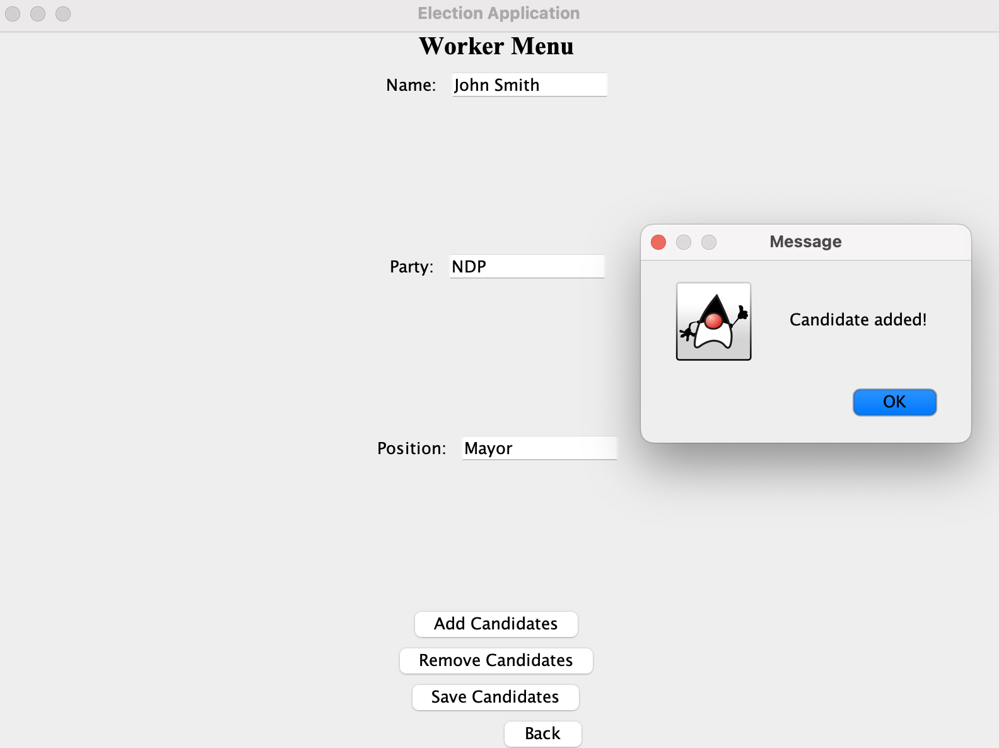
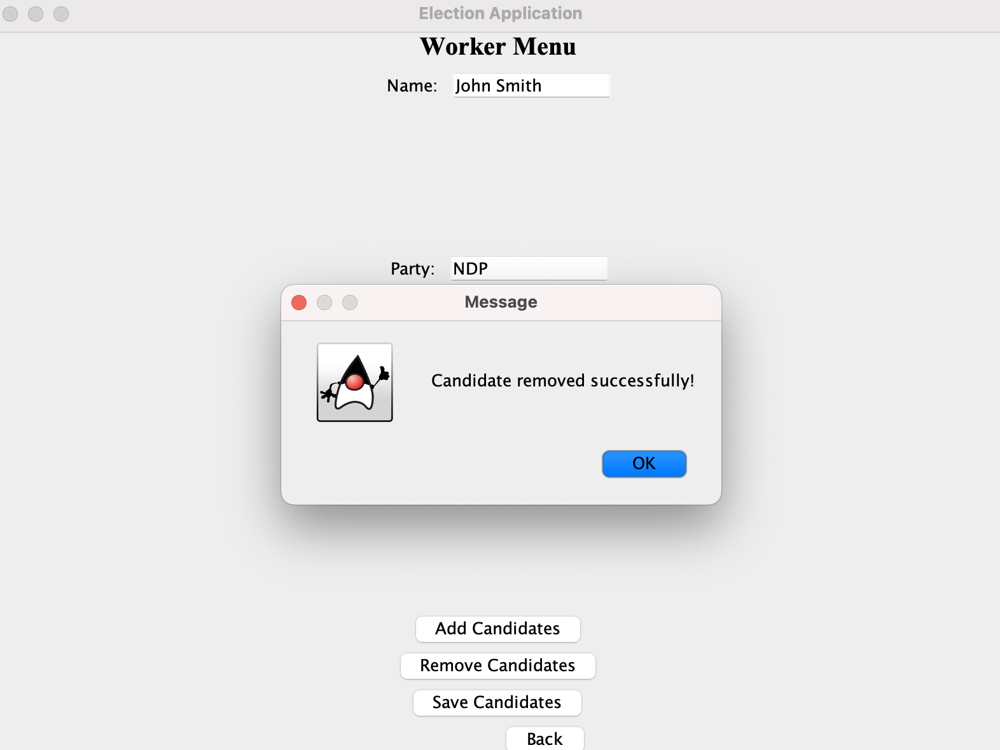

This project was developed as part of a computer science course to enhance our understanding of various system-building aspects. The primary goals included creating data storage through the use of JSON for saving and loading data, learning about user interface design using graphical user interfaces (GUIs), and event logs. The assignment involved designing a user-friendly interface that supported functionalities such as adding items to a list and creating new entries.
Project Description
Within this application, users will be able to look up political candidates of their local riding in Vancouver for the 2023 municipal election. The application will store candidates' information, platform, party affiliation, and other information regarding the policy reforms they are running on. Users will be voters across Vancouver interested in seeing and learning about the candidates they want to vote for. Users can look for specific candidates and their policies or look up information regarding party information and all the candidates running under certain parties. Furthermore, since it is a local election, candidates of the community (or their party) can add themselves/candidates to the kiosk and input their political information.

User Stories:
- As a user, I want to be able to add a candidate to the kiosk.
Figure 2:
- As a user, I want to view candidates and there information.
- As a user, I want to be able to be able to remove a candidate.
Figure 2:
- As a user, when I restart the program I want to be able to load the election information from the previous file.
- As a user, I want to be able to save my information, regarding candidates inputted when I quit.
Instructions for Grader:
- You can generate the first required action related to the user story "adding multiple candidates to the candidate repository" by clicking election workers and input information and click add candidates. You can view "reading multiple candidates to the candidate repository" by clicking voter button and click view candidates.
- You can generate the second required action related to the user story "removing candidates to the candidate repository" by clicking election workers button and click remove candidates, then type in the candidates name. View the changes in the voter menu.
- You can locate my visual component by opening the main page.
- You can save the state of my application by clicking on add candidates, adding a candidate then clicking the save candidate button.
- You can reload the state of my application by clicking on voter tab, clicking load candidates and then viewing them with the view tab.
Event Log When Program is Ran:
Mon Nov 27 23:09:30 PST 2023
Candidate Added.
Mon Nov 27 23:09:38 PST 2023
Candidate Added.
Mon Nov 27 23:09:38 PST 2023
Candidate Added.
Mon Nov 27 23:09:38 PST 2023
Candidate Added.
Mon Nov 27 23:09:38 PST 2023
Candidate Added.
Mon Nov 27 23:09:49 PST 2023
Candidate Removed.
Code for this project can be found on my github reporstory: Voter-Kiosk.git